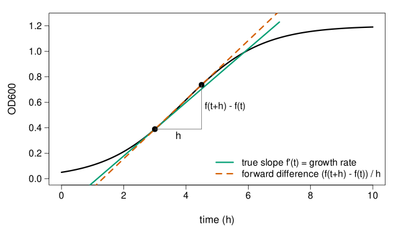
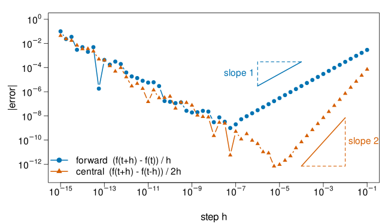
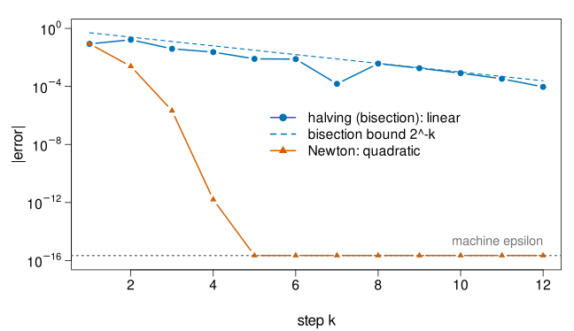
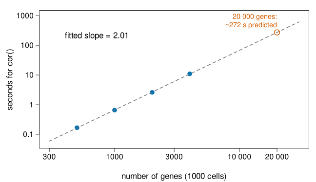
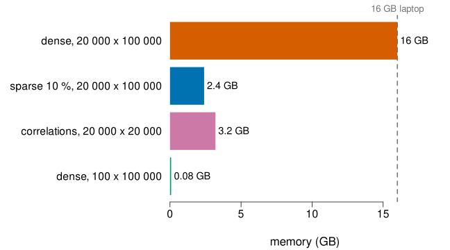

Every numerical method answers two questions: how accurate is it, and how long does it take? Today we learn to measure both, with experiments rather than proofs.
Truncation error (from cutting off a Taylor series) against rounding error (from floating point): the first shrinks as the step h shrinks, the second grows.
Order of accuracy: error \approx C h^p, and how to read p as the slope of a log–log plot.
Convergence of iterations: linear (a fixed number of digits per step) against quadratic (digits double each step).
Cost: counting operations, big-O, timing code, reading the exponent from a doubling experiment, and memory.
Biology: the growth rate of a bacterial culture from an OD curve, and why a gene–gene correlation that takes a second for 100 genes takes hours for 20 000 genes × 100 000 cells.
Two questions about every method
Accuracy. Most numerical methods have a knob: a step size h, a number of iterations, a number of grid points.
How does the error change when I turn the knob? If I halve h, does the error halve? Quarter?
Can I turn the knob too far?
Cost. Most biological data sets grow: more genes, more cells, more time points.
If I double the number of genes, does the run time double? Quadruple? Go up eight-fold?
Will the answer fit in memory at all?
A single-cell RNA-seq experiment: 20 000 genes × 100 000 cells. A method tested on 100 genes can look instant and still be useless at full size.
Running example: growth rate from an OD curve
A bacterial culture follows a logistic curve, N(t) = \dfrac{K}{1 + (K/N_0 - 1)\,e^{-rt}}, with K = 1.2, N_0 = 0.05, r = 0.8 per hour.
The growth rate at time t is the slope N'(t). Approximate it by a forward difference: N'(t) \approx \frac{N(t+h) - N(t)}{h}

First try in R
K <-1.2; N0 <-0.05; r <-0.8# OD units, per hourod <-function(t) K / (1+ (K / N0 -1) *exp(-r * t))t0 <-3exact <- r *od(t0) * (1-od(t0) / K) # logistic: N' = r N (1 - N/K)h <-0.1fd <- (od(t0 + h) -od(t0)) / hc(fd, exact, fd - exact)# [1] 0.213147350 0.210259735 0.002887615
At t = 3 h the culture grows at 0.2103 OD units per hour; h = 0.1 h gives 0.2131.
Error \approx 0.003, about 1.4 % relative error. Not bad, but can we do better by shrinking h?
Below h \approx 10^{-8} the error grows again. At h = 10^{-15} the growth rate is off by half.
Rounding error: \varepsilon / h
od(t0 + h) and od(t0) are each stored with a relative error up to \varepsilon \approx 2.2\times10^{-16}, i.e. an absolute error of about \varepsilon\,|N| \approx 10^{-16}.
For tiny h the two values agree in almost all digits: subtracting them is catastrophic cancellation (error-conditioning). The difference keeps the absolute error \approx \varepsilon |N| but loses the leading digits.
Dividing by h then amplifies it: \text{rounding error} \approx \frac{\varepsilon\,|N(t)|}{h}
The two terms balance near h \approx \sqrt{\varepsilon} \approx 10^{-8}; the best error is also \approx \sqrt{\varepsilon}: only about 8 of 16 digits survive.
Order of accuracy: error \approx C\,h^p
In the truncation regime most methods behave like \text{error} \approx C\,h^p, \qquad \text{written } \text{error} = O(h^p) \text{ ("big-O of } h^p\text{")}.
p is the order of the method; C depends on the function (here C = |N''|/2 = 0.0296).
Forward difference: p = 1 (first order). Halving h halves the error.
A second-order method (p = 2): halving h quarters the error. Third order: divides it by 8.
h
O(h), C=1
O(h^2), C=1
O(h^4), C=1
10^{-1}
10^{-1}
10^{-2}
10^{-4}
10^{-2}
10^{-2}
10^{-4}
10^{-8}
Higher order buys more digits for the same h, if the function is smooth enough for the Taylor argument to hold.
Reading the order off a log–log plot
Take logs of \text{err} = C h^p: \quad \log_{10}\text{err} = \log_{10} C + p\,\log_{10} h. A straight line with slope p.
h <-c(0.1, 0.01, 0.001, 0.0001)err <-abs((od(t0 + h) -od(t0)) / h - exact)log10(err[1] / err[2]) /log10(h[1] / h[2]) # slope from two points# [1] 0.9901948coef(lm(log10(err) ~log10(h))) # slope from all points# (Intercept) log10(h)# -1.5399748 0.9966565
Measured order \approx 1, as Taylor predicted. 10^{-1.54} = 0.029 \approx C.
Only fit the straight part. Points in the rounding regime would pull the slope towards -1.
A second-order formula, for contrast
The central difference\dfrac{N(t+h) - N(t-h)}{2h} is symmetric about t: the h^2 Taylor terms cancel and the error is O(h^2).

Slope 2: dividing h by 10 gains two digits. Best error \approx 10^{-12} at h \approx 10^{-5}.
lo <-1; hi <-2; x <-1# bracket [1, 2]; Newton startfor (k in1:5) { mid <- (lo + hi) /2# halving (bisection)if (mid^2>2) hi <- mid else lo <- mid x <- (x +2/ x) /2# Newton for x^2 = 2cat(k, signif(abs(mid -sqrt(2)), 2), signif(abs(x -sqrt(2)), 2), "\n")}# 1 0.086 0.086# 2 0.16 0.0025# 3 0.039 2.1e-06# 4 0.023 1.6e-12# 5 0.008 2.2e-16
Linear vs quadratic convergence

Linear: e_{k+1} \approx c\,e_k with c < 1. Bisection: c = \tfrac12, so about 0.3 digits per step; 16 digits take ~53 steps. Straight line on a log-y plot.
Quadratic: e_{k+1} \approx C\,e_k^2. Digits double each step: 1, 2, 5, 11, 16. A line curving downwards.
The order of convergence is the power: 1 for linear, 2 for quadratic.
system.time() returns seconds; "elapsed" is wall-clock time. Your numbers will differ; the ratio should not: × 4 per doubling, so O(n^2).
Log–log of time vs n: read the exponent, extrapolate

coef(lm(log10(secs) ~ log10(genes))) gives slope 2.01: quadratic, as predicted.
Extrapolate: 20 000 genes ≈ 10.9 \times 5^2 \approx 270 s for 1000 cells, × 100 for 100 000 cells ≈ 7.6 hours. 100 genes × 100 000 cells: ≈ 0.7 s.
When timing misleads
A timing is a measurement, with noise and systematic errors.
Too small: below ~0.1 s, start-up overhead and the clock resolution dominate. Times look flat in n, the slope comes out too low.
Multi-threaded libraries (BLAS, used by %*%, crossprod) use more cores as n grows, which also lowers the measured slope. Example: A %*% A here gave ratios × 2, × 3, × 6 for n = 500 \ldots 4000, not × 8.
Memory runs out: once the data no longer fit in RAM, times jump by orders of magnitude.
The check: time at least 3–4 sizes, increase n until each run takes ≥ 0.1 s and the doubling ratio settles. Then extrapolate.
Loops vs vectorised code
set.seed(1)x <-runif(1e7); y <-runif(1e7)dot_loop <-function(x, y) { s <-0for (i inseq_along(x)) s <- s + x[i] * y[i] s}system.time(dot_loop(x, y))["elapsed"] # 0.555system.time(sum(x * y))["elapsed"] # 0.066system.time(crossprod(x, y))["elapsed"] # 0.032
All three are O(n). The constant differs: about 17× here; in plain Python loops it is more like 100×.
Vectorising changes C, never p. An O(n^2) method stays O(n^2) when vectorised.
Memory: 8 bytes per number
A double takes 8 bytes. A dense matrix with r rows and c columns takes 8rc bytes.
X <-matrix(0, nrow =1000, ncol =1000)object.size(X)# 8000216 bytes20000*100000*8/1e9# GB: genes x cells, dense# [1] 1620000^2*8/1e9# GB: gene x gene correlation matrix# [1] 3.2
object.size(): 10^6 entries × 8 bytes, plus a small header.
A full single-cell matrix as dense doubles needs 16 GB: a whole laptop’s memory, before any copy. R often makes copies.
Sparsity: store only the non-zeros

Single-cell count matrices are typically 90 % zeros or more.
Sparse storage keeps only the non-zeros: value (8 bytes) + row index (4 bytes).
At 10 % non-zero: 16 GB → 2.4 GB. Work also scales with the number of non-zeros, not rc.
library(Matrix) # ships with Rset.seed(1)S <-rsparsematrix(2000, 10000, density =0.1,rand.x =function(n) rpois(n, 2) +1) # genes x cellsD <-as.matrix(S)c(dense =object.size(D), sparse =object.size(S)) /1e6# MB# dense sparse# 160.0002 24.0415Sc <- S -rowMeans(S) # centre each gene ...c(centred =object.size(Sc)) /1e6# ... and the zeros are gone# centred# 160.0012
Centring subtracts the mean from every entry, so every zero becomes non-zero: the matrix is dense again. At full size: 2.4 GB → 16 GB.
The check: look at class() and object.size() after each step. Avoid centring the whole matrix; tools like PCA on sparse data centre implicitly.
Summary
Truncation error comes from cutting off Taylor: forward difference error \approx \tfrac{|f''|}{2}h. Rounding error\approx \varepsilon|f|/h grows as h shrinks. Total error is a V; best h \approx \sqrt{\varepsilon}, only ~8 digits left.
Order of accuracy: error \approx C h^p = O(h^p). Read p as the slope of log(error) vs log(h), fitted on the straight part only. Without the exact answer: ratios of successive differences \approx 2^p.
Iterations: linear convergence gains a fixed number of digits per step; quadratic doubles the digits per step.
Cost: dot product O(n), matrix–vector O(n^2), matrix–matrix O(n^3), all-pairs correlation O(n^2 m). Doubling n multiplies time by 2^p.
Timing: system.time() at several sizes, slope of log(time) vs log(n), then extrapolate. Use sizes large enough to measure.
Memory: 8 bytes per double; 20 000 × 100 000 dense = 16 GB. Sparse storage keeps only non-zeros, until a centring step makes the matrix dense.